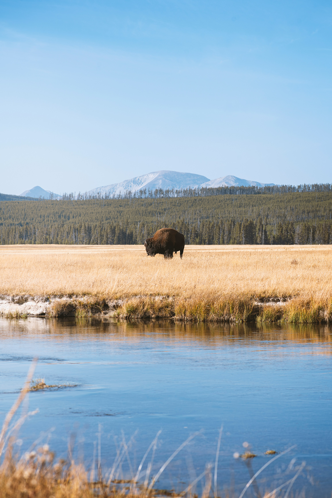
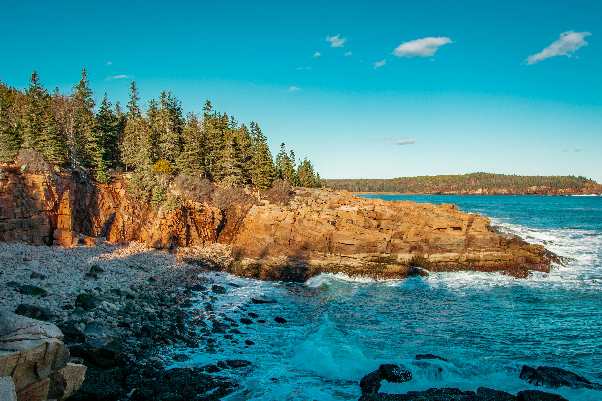

The American National Park system, often hailed as "America's Best Idea," began as a revolutionary democratic experiment to ensure that the nation's most sublime landscapes remained public property rather than private estates. This vision was formalized in 1872 when President Ulysses S. Grant signed the Yellowstone National Park Protection Act into law, creating the world's first national park. The movement gained its soul through the evocative writings of John Muir, who championed the spiritual and physical necessity of wild places, and its political momentum through Theodore Roosevelt, whose conservationist presidency protected over 230 million acres of public land. By the time the National Park Service was officially established in 1916 under the Organic Act, the mission had become a permanent part of the American identity: to conserve the scenery, the natural and historic objects, and the wild life therein for the enjoyment of future generations in a way that leaves them unimpaired for the future.
